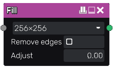

Fill From Colors node¶
The Fill From Colors node generates specific data for the fill companion (generally named “Fill to …”) nodes from an image composed of color areas.
That fill information is an axis aligned bounding box of each filled area.
Outputs¶
The Fill node generates a single RGBA texture that contains the bounding box of each filled area.
Parameters¶
The Fill node accepts the following parameters:
resolution is the resolution of the effect and only influences how details of the mask (and not the source if any) is captured. It is advised to be careful with using high values here, as the computation time may become very long and high resolutions can cause precision issues. Setting it higher than the input’s resolution will not yield any benefit - only increase the computation time.